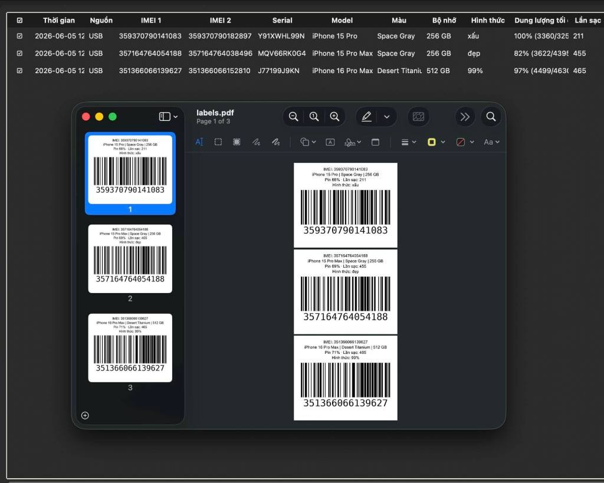

Cắm USB — tự đọc
Cắm rút liên tục nhiều iPhone. Mỗi máy tự thêm dòng: IMEI, model, màu, pin, lần sạc. Cắm lại máy cũ thì cập nhật, không trùng.
Sản phẩm phục vụ cửa hàng bán Apple · Taoden.vn
Táo Đen IMEI Tool giúp ace cửa hàng nhập hàng iPhone không cần mở 3uTools từng máy. Cắm rút USB liên tục — tool tự đọc IMEI, Model, màu, dung lượng, % pin, số lần sạc, lưu vào bảng, in tem hàng loạt dán lên từng cây để quản lý kho.

Nhập hàng → cắm vào máy tính → mở 3uTools check từng cây: Model, màu, dung lượng, % pin, số lần sạc, Lock / Quốc tế… Ghi chép tay hoặc copy từng máy — mệt và dễ sai khi chỉ vài chục cây.
Bài toán: Nếu cỡ vài chục hay vài trăm cây thì sao?
Táo Đen IMEI Tool làm hết. Chỉ cần cắm rút từng máy vào App — cắm liên tục thoải mái. Tool tự đọc thông số, lưu bảng, sửa hình thức ngay trên bảng, xuất Excel, tick chọn và in tem hàng loạt dán lưng máy — quản lý kho gọn, không lẫn IMEI.
Đủ thông tin cửa hàng cần khi thu mua & quản lý tồn kho
Thiết kế cho quầy nhập hàng — ít click, ít sai, in tem ngay tại chỗ
Cắm rút liên tục nhiều iPhone. Mỗi máy tự thêm dòng: IMEI, model, màu, pin, lần sạc. Cắm lại máy cũ thì cập nhật, không trùng.
Tick chọn máy → in PDF nhãn hàng loạt: IMEI, model, màu, dung lượng, % pin, barcode quét ra IMEI. Dán lên từng cây — quản lý kho không lẫn.
Xuất toàn bộ bảng một cú click — gửi kế toán, đối soát nhập hàng, lưu trữ.
Click ô để sửa hình thức, ghi chú, model… Enter lưu — tự động ghi SQLite, tắt app vẫn còn.
Máy full hộp chưa cắm được? Chụp màn hình Cài đặt → Giới thiệu hoặc dán nhiều ảnh — tool OCR đọc IMEI, Serial.
Dán list IMEI từ phiếu, Excel hoặc copy text — thêm hàng loạt không cần cáp.
Chọn nhiều dòng: in tem đã tick, xóa hàng loạt, copy nhanh từng ô (⌘+click).
Chọn cột nào hiện bảng, mục nào in trên tem — tùy quy trình từng shop.
OK — ngồi quét mã vạch hộp như 3u vẫn được. Ngoài ra tool còn đọc thông số từ ảnh (màn hình Giới thiệu, phiếu, nhiều ảnh một lúc) khi chưa muốn mở seal hoặc chưa cắm cáp.
Bảng danh sách máy nhập + cửa sổ Preview in tem PDF
Trái: bảng IMEI, Model, Màu, Bộ nhớ, Hình thức, % Pin, Lần sạc — cắm USB tự đổ. Phải: tem in sẵn barcode — dán lưng máy, quét lại IMEI bất cứ lúc nào.
Mở app → cắm iPhone → Tin cậy. Rút máy này, cắm máy khác — bảng tự đầy.
Ghi hình thức (đẹp, 99%, xấu…). Tick ☑ các máy cần in tem.
Tệp → In đã tick → dán tem lưng máy. Xuất Excel khi cần báo cáo.
Sẽ sớm tung bản cập nhật — theo dõi qua Zalo
Check carrier lock hay máy quốc tế cho cả bảng — không cần từng máy trên 3u.
Kiểm tra iCloud còn hay không, MDM doanh nghiệp, máy đã kích hoạt chưa — hàng loạt.
Gói trên MEGA gồm app macOS + file hướng dẫn PDF:
macOS 11+ · Lần đầu mở: chuột phải → Mở (Gatekeeper)
.app vào Ứng dụngTaoden.vn · Exshop.vn — Pin Bison/Enerziger, sim ghép, unlock, check máy, sửa chữa. Chat Zalo để nhận bản mới và tính năng Lock / iCloud sắp ra.